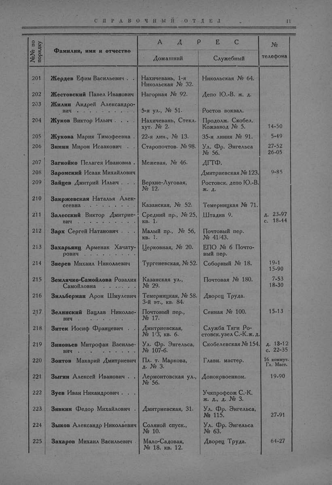

Лист источника 59
Скан

Распознанный текст
СПРАВОЧНЫЙ ОТДЕЛ 11
№№ по порядку Фамилия, имя и отчество А Д Р Е С № телефона
Домашний Служебный
201 Жердев Ефим Васильевич . . Нахичевань, 1-я Никольская № 32. Никольская № 64.
202 Жестовский Павел Иванович Нагорная № 92. Депо Ю.-В. ж. д.
203 Жилин Андрей Александрович . . . . . . . . . 5-я ул., № 51. Ростов вокзал.
204 Жуков Виктор Ильич . . . Нахичевань, Стекл. хут. № 2. Продолж. Скобел. Кожзавод № 5. 14-50
205 Жукова Мария Тимофеевна . 22-я лин., № 13. 35-я линия № 91. 5-49
206 Зимин Мирон Исаакович . . Старопочтов. № 98. Ул. Фр. Энгельса № 56. 27-52 26-05
207 Загнойко Пелагея Ивановна . Межевая, № 46. ДГТФ.
208 Заромский Исаак Михайлович Дмитриевская № 123. 9-85
209 Зайцев Дмитрий Ильич . . . Верхне-Луговая, № 12. Ростовск. депо Ю.-В. ж. д.
210 Закржевская Наталья Алексеевна . . . . . . . . Казанская, № 52. Темерницкая № 71.
211 Залесский Виктор Дмитриевич . . . . . . . . . Средний пр., № 25, кв. 1. Штадив 9. д. 23-97 с. 18-44
212 Зарх Сергей Натанович . . . Малый пр., № 56, кв. 1. Почтовый пер. № 41/43.
213 Захарьянц Арменак Хачатурович . . . . . . . . Церковная, № 20. ЕПО № 6 Почтовый пер.
214 Зверев Михаил Николаевич Тургеневская, № 52. Соборный № 18. 19-1 15-90
215 Землячко-Самойлова Розалия Самойловна . . . . . Казанская ул., № 29. Почтовая № 180. 7-53 18-30
216 Зильберман Арон Шмулевич Темерницкая, № 58. 3-й эт., кв. 84. Дворец Труда.
217 Зелинский Вацлав Николаевич . . . . . . . . . Почтовый пер., № 17. Сенная № 100. 15-13
218 Зитек Иосиф Францевич . . Дмитриевская, № 1/3, кв. 6. Служба Тяги Ростовск. узел С.-К. ж. д.
219 Зиновьев Митрофан Васильевич . . . . . . . . . Ул. Фр. Энгельса, № 107-б. Скобелевская № 154. д. 13-12 с. 22-35
220 Зонтов Макарий Дмитриевич Пл. т. Маркова, д. № 3. Главн. мастер. 16 коммут. Гл. Маст.
221 Зыгин Алексей Иванович . . Лермонтовская ул., № 56. Донокрвоенком. 19-90
222 Зуев Иван Никандрович . . Учпрофсож С.-К. ж. д., д. № 3.
223 Зявкин Федор Михайлович . Дмитриевская, 31. Ул. Фр. Энгельса, № 115. 27-91
224 Зыков Александр Николаевич Соляной спуск., № 10. Ул. Фр. Энгельса № 63.
225 Захаров Михаил Васильевич . Мало-Садовая, № 18. кв. 12. Дворец Труда. 64-27